年代、数值及“现在”“期待”等表述按原讲义时点理解，尤其是东大机器人及医疗机器人案例。
AIの定義
AIはArtificial Intelligenceの略で、日本語では「人工知能」と言います。
AI 是 Artificial Intelligence 的缩写，日语为“人工知能”。
人間が知能を使ってすることを、機械にさせようとする技術です。
让机器执行原本需要人类智能的任务，是讲义对 AI 的主要解释。
「知能」の意味が広いため、AIの定義も一つに決まっていません。
“智能”的含义很广，因此 AI 并没有唯一、完全统一的定义。
1956年のダートマス会議で、ジョン・マッカーシーが「人工知能」という名前を使いました。
讲义指出，John McCarthy 在1956年的达特茅斯会议上使用了“人工智能”这一名称。
AIを研究することは、必ずしも人間と同じ心を持つ機械を作ることではありません。
执行智能任务，并不意味着必须制造一个具有与人类相同心智的机器。
展开本节原讲义（3页）
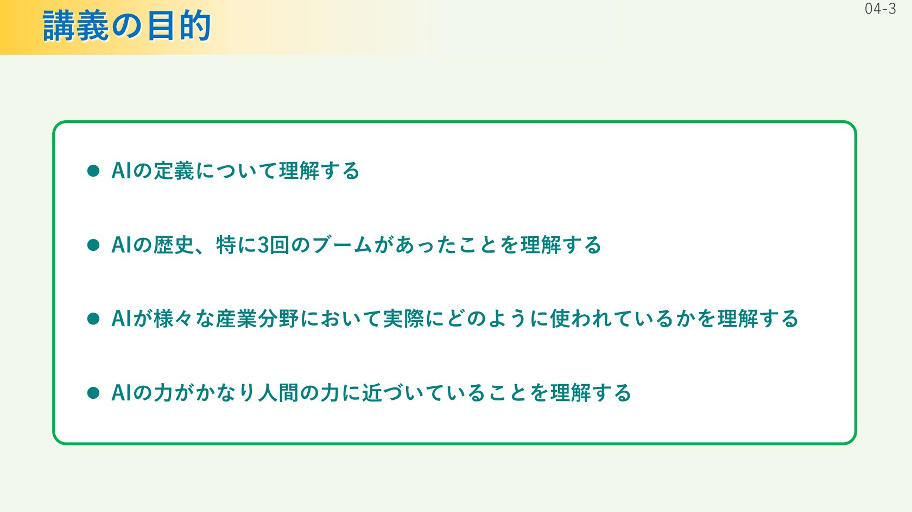
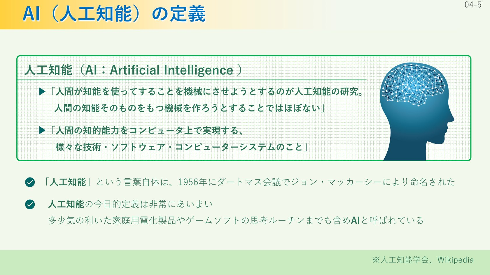
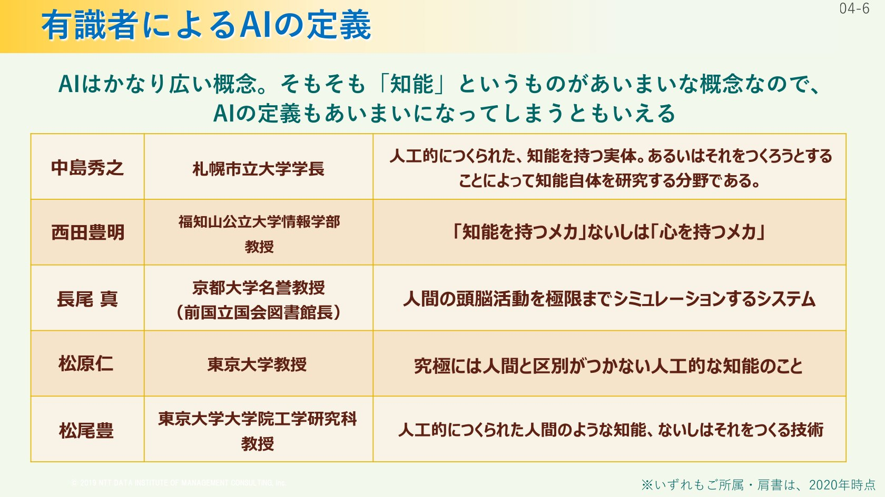
AIの歴史：3回のブーム
AIは「推論・探索」「知識」「機械学習・ディープラーニング」の時代を経て発展しました。
记忆顺序：搜索答案 → 输入知识规则 → 从数据学习。
ここでの「現在」は、講義資料が作られた時点を指します。
讲义里的“现在”指其编写时点；本文整理原资料，不把旧案例当作2026年的最新结论。
| 阶段 | 讲义年代 | 核心方法 | 主要困难 |
|---|---|---|---|
| 第一次热潮 | 1950—1960年代 | 推理、搜索 | 能解简化问题，难处理复杂现实 |
| 第二次热潮 | 1980年代 | 输入专家知识、规则 | 知识难获取、难描述、难维护 |
| 第三次热潮 | 讲义标为1990年代中期起 | 机器学习、深度学习 | 从大量数据学习模式与特征 |
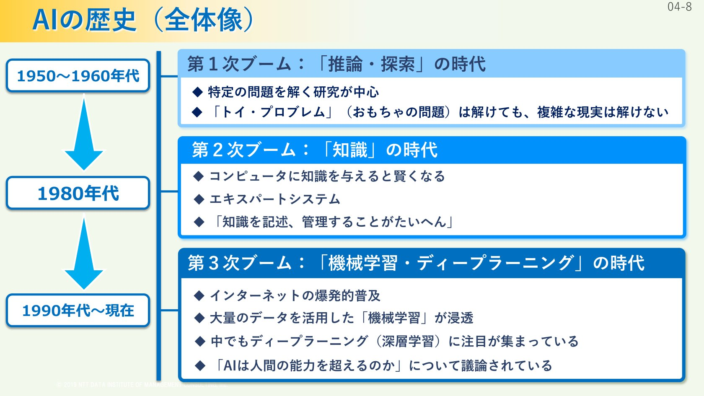
第1次ブーム：推論・探索
探索では、いくつもの選択肢を調べて、答えに近づきます。
搜索：逐步检查不同选择，寻找能够到达目标的路径。
迷路の分かれ道を木のように表したものが、探索木です。
搜索树：把迷宫的岔路表示成节点和分支，方便追踪不同路线。
ロジック・セオリストは、数学の定理を自動で証明する初期のAIプログラムです。
Logic Theorist 是早期 AI 程序，模拟问题解决过程，自动证明数学定理。
講義では、52の定理のうち38を証明したと紹介されています。
讲义记载：它证明了《数学原理》开头52个定理中的38个，有些证明方法还更简洁。
ルールが明確な「トイ・プロブレム」は解けても、複雑な現実の問題には限界がありました。
局限：可以解决规则明确的“玩具问题”，但现实问题有模糊信息、常识和大量可能性。
機械翻訳への期待が下がり、研究予算の削減も起きました。
讲义以 ALPAC 报告与研究经费削减说明第一次热潮的退潮。
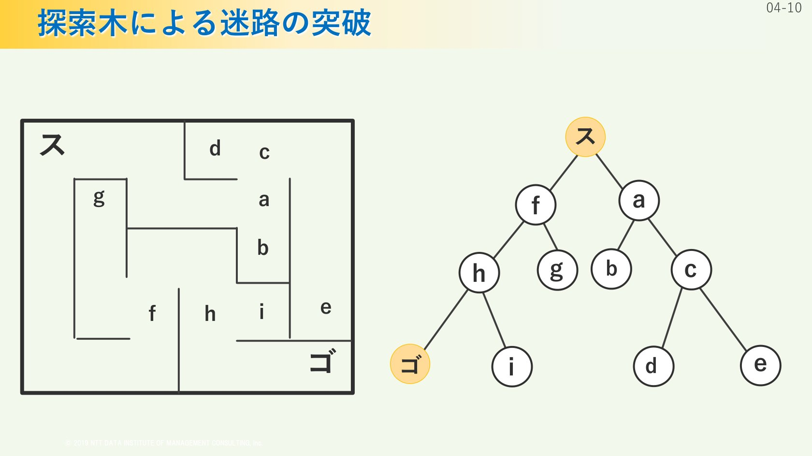
展开本节原讲义（2页）
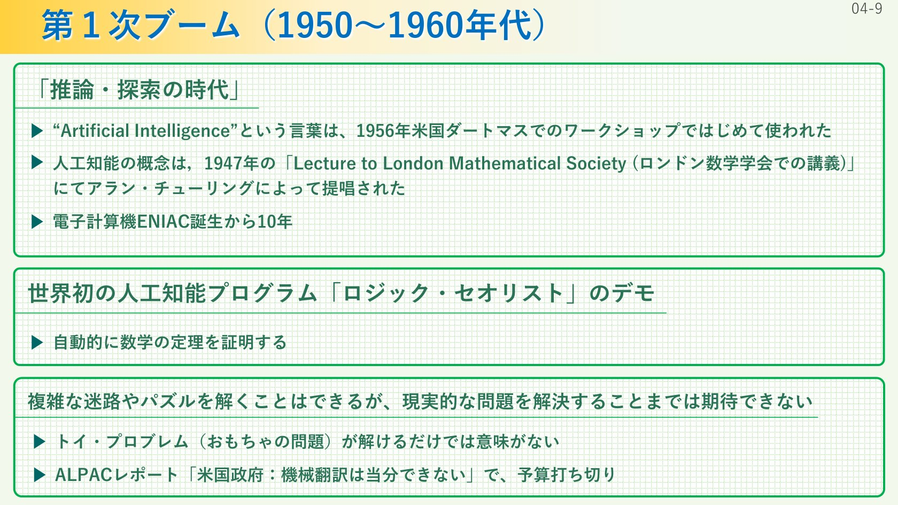
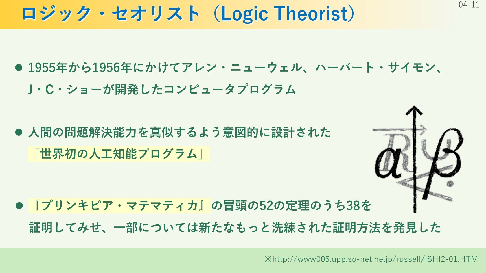
第2次ブーム：知識とエキスパートシステム
エキスパートシステムは、専門家の知識やルールを使って、推論や判断を行うシステムです。
专家系统：将专家知识写成规则，让计算机推理和判断。
「もしAならB」というルールを増やしますが、数が多くなると矛盾や管理の難しさが生まれます。
规则越多，越容易出现冲突，也越难维护。现实中的常识、感情和模糊表达很难全部转成规则。
知識獲得のボトルネックとは、必要な知識を集めて機械に与えることが難しいという問題です。
知识获取瓶颈：从专家处提取知识、整理并输入计算机非常困难。
日本では1982年から10年間、第5世代コンピュータの研究に570億円を投入しました。
讲义案例：日本第五代计算机项目持续10年，投入570亿日元，试图提高知识处理和推理能力。
Dendralは、有機化学の知識を使い、未知の化合物を特定するシステムです。
Dendral：结合质谱分析与有机化学知识，判断未知化合物；项目始于1965年，是早期专家系统。
MYCINは、感染症の診断や抗生物質の選択を支援するシステムです。
MYCIN：使用约500条规则，辅助识别感染细菌并选择抗生素。讲义列出69%与专家80%的比较，属于当时案例数据。
ELIZAは、入力された文章のパターンに合わせて返事をする初期の対話プログラムです。
ELIZA：1964—1966年开发的早期文本对话程序，主要依靠模式匹配。
自然な返事を見て、人が機械にも理解や知性があると感じることを「イライザ効果」と呼びます。
ELIZA效应：人容易因程序的自然回应而赋予它理解能力或智能。注意：Dendral、ELIZA的开发年代早于第二次热潮，本节是按讲义主题归类。
展开本节原讲义（4页）
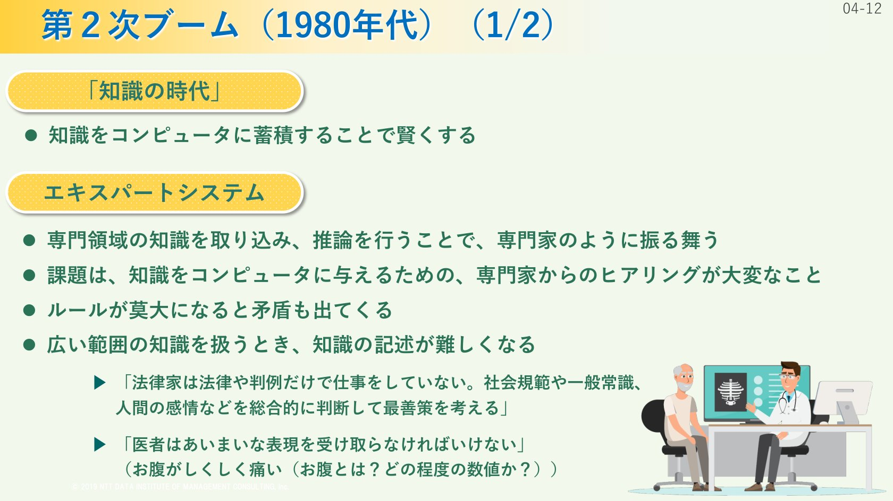
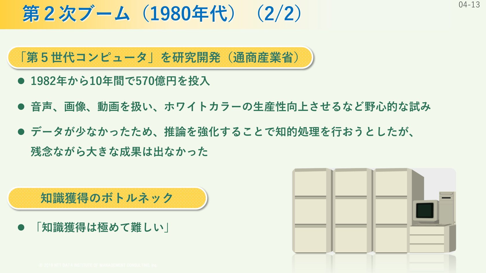
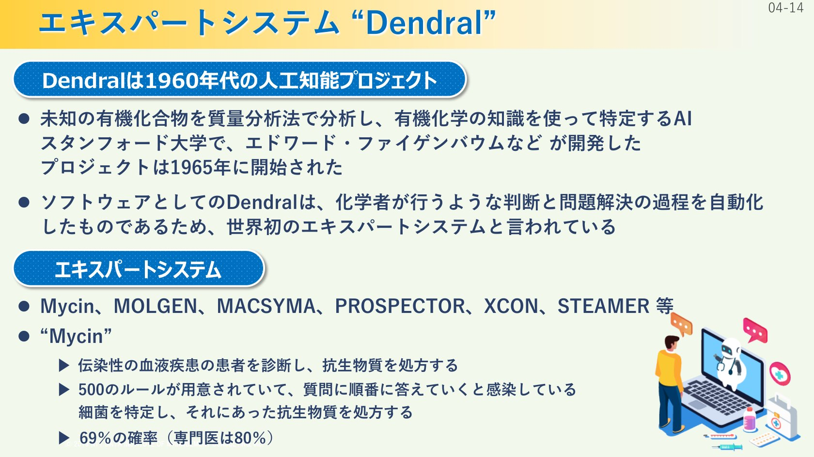
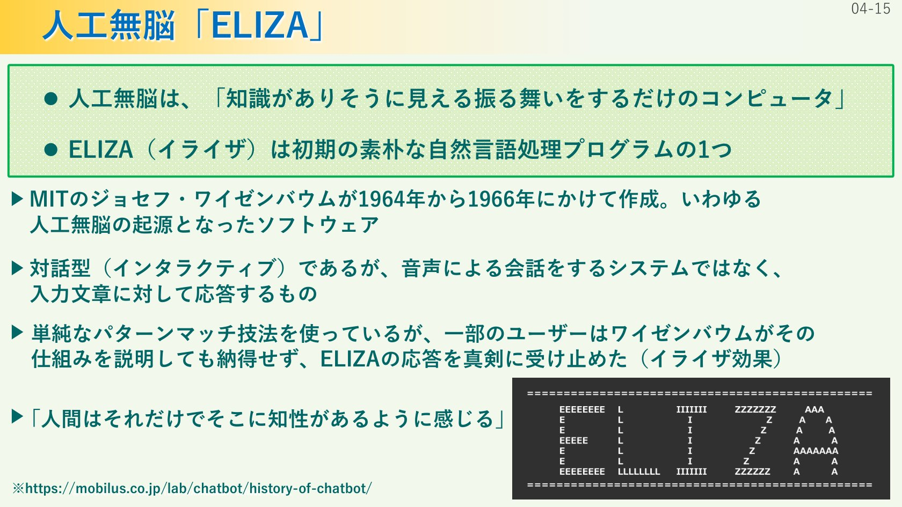
第3次ブーム：機械学習と深層学習
インターネットの普及により、大量のデジタルデータを利用できるようになりました。
互联网普及带来了大量数字数据，为学习型 AI 提供了条件。
機械学習は、データからパターンを学び、特定のタスクを行う方法です。
机器学习：通过数据和训练学习模式，执行特定任务。
ディープラーニングでは、データの特徴を機械が学習できることが重要です。
深度学习的重点：模型可以从数据中学习多层特征表示，减少人工设计特征的需要。
AIの中に機械学習があり、その中にディープラーニングがあります。
包含关系：深度学习 ⊂ 机器学习 ⊂ AI。不是所有 AI 都采用深度学习。
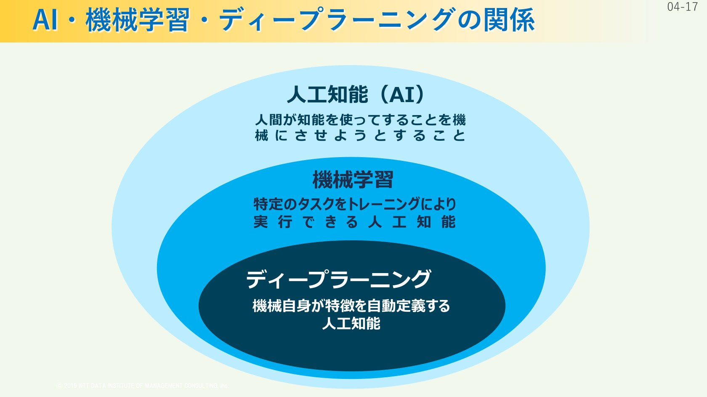
展开本节原讲义（1页）
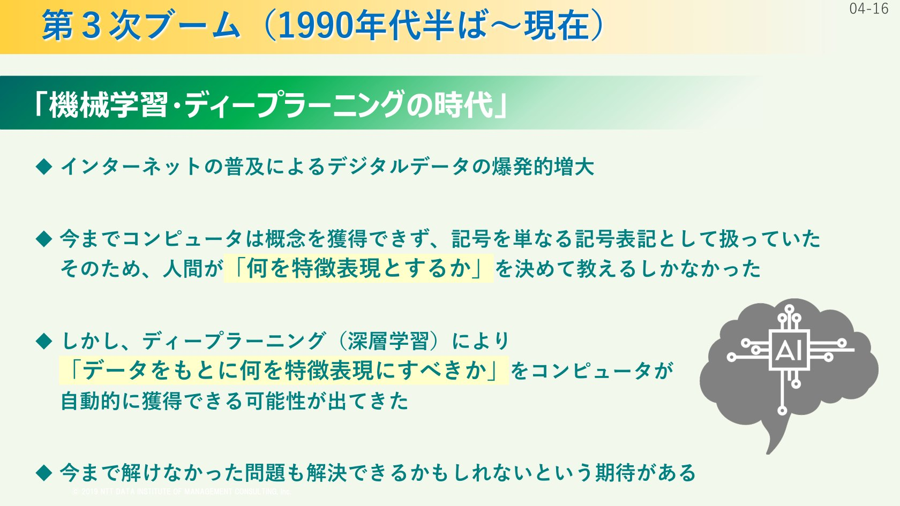
チェス・将棋・囲碁のAI
チェスでは、棋譜のデータベースと高性能なハードウェアが役立ちました。
国际象棋案例：大量棋谱和性能提升的计算机帮助搜索与评估。
将棋では、ボナンザのソースコードの公開が研究の発展に役立ちました。
将棋案例：2005年 Bonanza 开源，其他研究者可以借鉴和改进。
囲碁では、盤面の特徴を学び、コンピュータどうしの対局も活用しました。
围棋案例：学习棋盘特征，结合自我对弈等方法提升判断能力。
探索空間が大きいほど、すべての可能性を調べることが難しくなります。
探索空间越大，穷举所有可能性越难；10的指数越大，规模越大。这些数值是讲义中的复杂度示意。
| 游戏 | 讲义案例 | 探索空间（讲义值） | 主要解释 |
|---|---|---|---|
| 国际象棋 | 1997年 Deep Blue | 10120 | 硬件性能、棋谱数据库 |
| 将棋 | 2015年电脑方获胜 | 10220 | Bonanza 等开源代码 |
| 围棋 | 2016年 AlphaGo | 10360 | 深度学习、自我对弈等 |
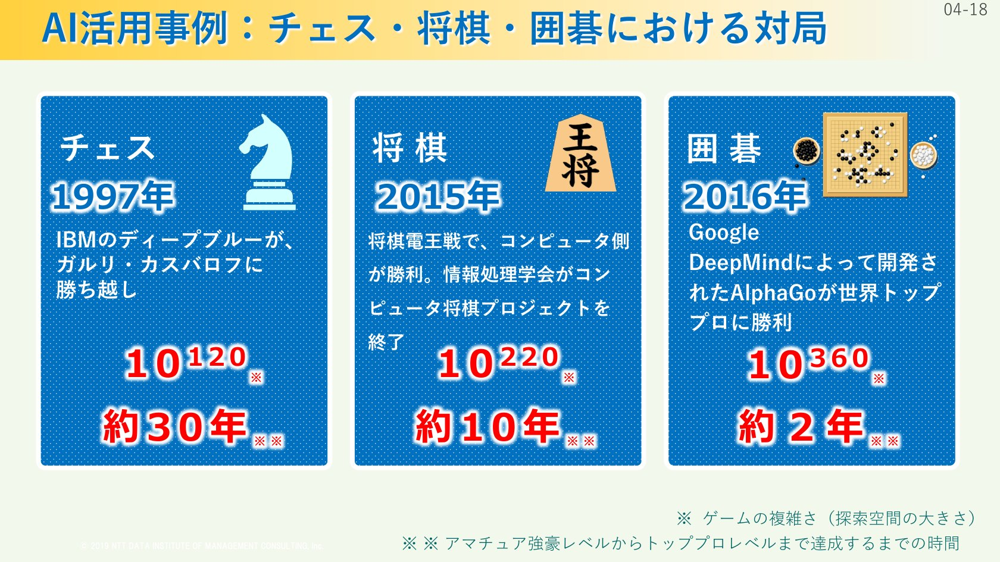
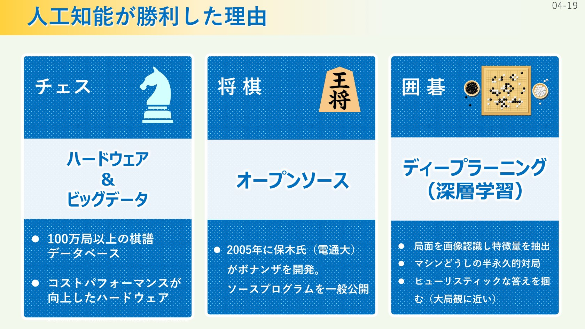
製造業におけるAI活用
自動検品：良品と不良品の画像から学び、不良品を見つけます。
自动质检：学习合格品与不合格品图像，检测裂纹等缺陷。汽车零件案例使用数百万张样本，适应不同光照。
異常予測：機械の稼働データを分析し、故障の兆候を見つけます。
异常预测：分析运行数据，发现异常征兆，帮助预防故障。
危険検知：映像から危険な状況を見つけ、警告や停止につなげます。
危险检测：钢铁厂摄像头识别人员进入禁区，发出警告并停止生产线。
商品仕分け：画像とラベルを学習し、商品を分類します。
商品分拣：学习图片与商品名称标签，自动辨别和分类商品。
展开本节原讲义（2页）
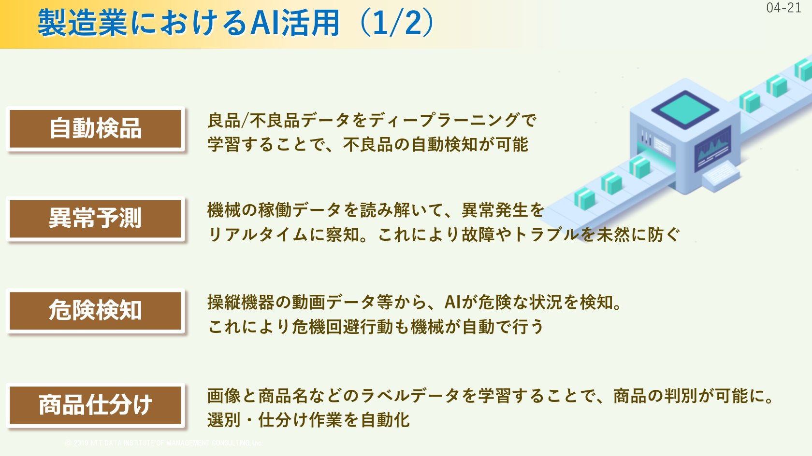
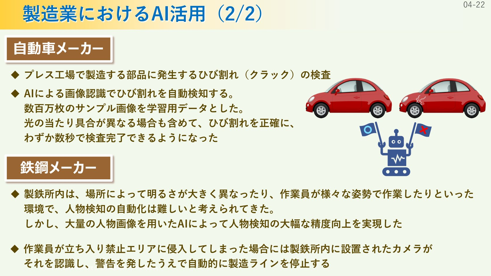
小売業におけるAI活用
需要予測：過去の売上や天候から、必要な商品の数を予測します。
需求预测：根据过去销售记录与天气，建议订货数量；负责人确认后下单。
発注を効率化し、品切れや商品の廃棄を減らすことができます。
效果：减少订货工作量、缺货造成的销售机会损失，以及过量订货导致的报废。
顧客の動線を分析し、商品配置や店内の通路を改善します。
顾客行为分析：从店内视频识别移动路线，改进商品陈列、通道和促销。
混雑状況を可視化し、空いている時間帯の利用を促します。
拥挤分析：显示实时客流，预测忙闲时段，为低客流时段设计促销。讲义还提到根据推测的年龄、性别投放广告；推测不等于确定事实。
展开本节原讲义（2页）
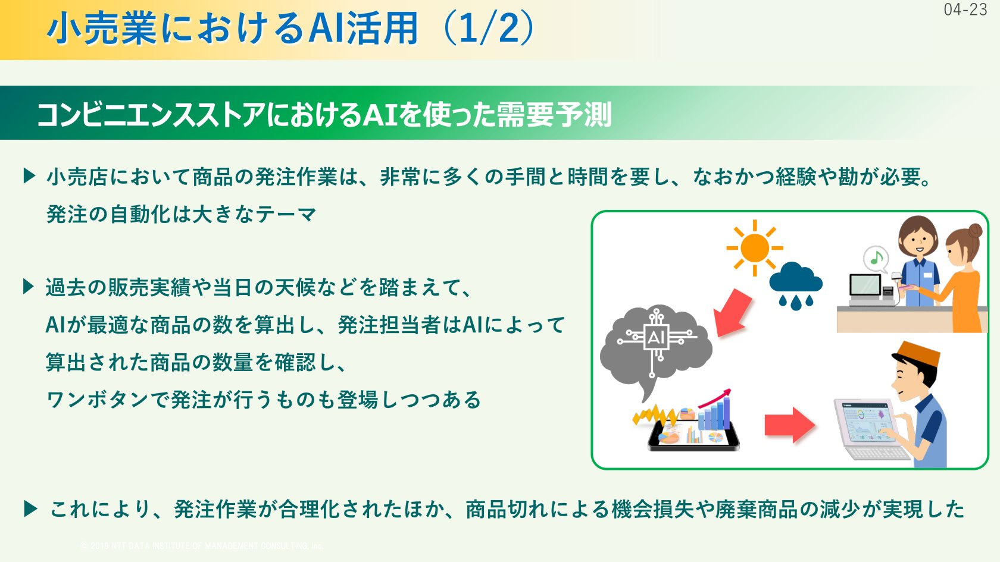
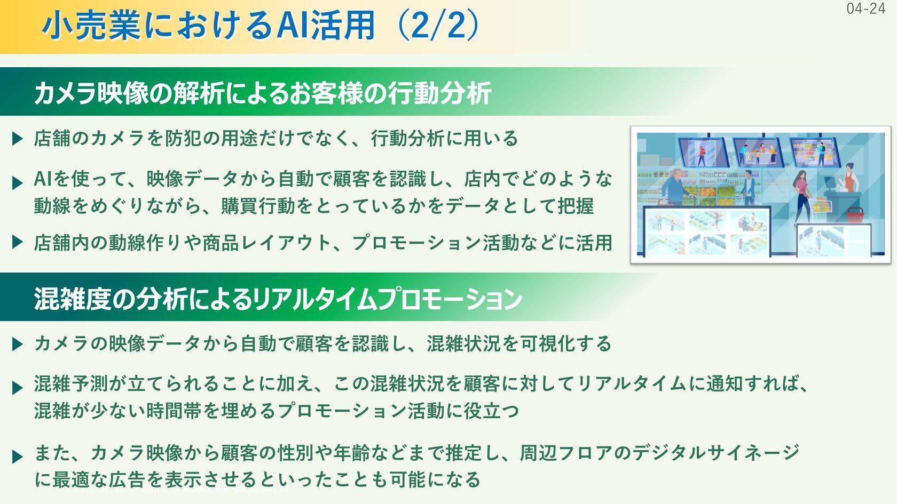
物流業におけるAI活用
入出荷の検品では、荷物のラベルを画像解析で読み取ります。
入出库检查：自动读取标签和商品信息，减少人工录入时间及错误。
荷物の大きさや汚れを判定し、仕分けや取扱いに役立てます。
货物图像判断：分析尺寸、污损及处理注意事项，支持自动分拣。
加速度センサーや車載カメラを使い、急ブレーキや居眠り運転などを検知します。
危险驾驶检测：传感器识别急刹车、撞击等动作，摄像头辅助检测疲劳驾驶和分心驾驶，降低事故风险。
展开本节原讲义（2页）
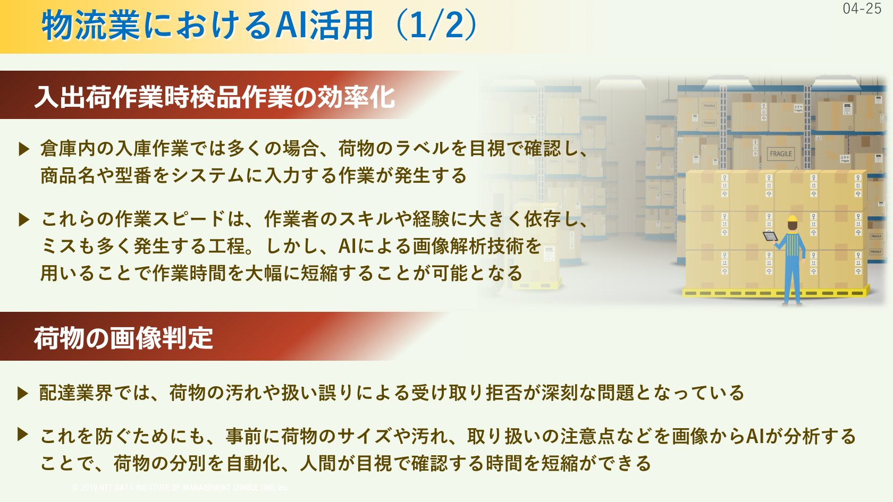
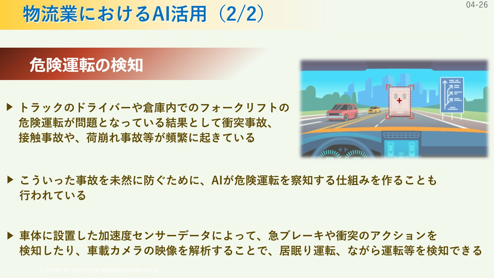
医療・介護におけるAI活用
ゲノム医療：遺伝情報を分析し、病気のリスクや薬への反応を調べます。
基因组医疗：分析DNA相关信息，辅助研究疾病风险、药物反应与副作用。
画像診断支援：CTやMRIの画像を分析し、見落としを減らすことを目指します。
影像诊断支持：分析CT、MRI等图像，辅助发现异常，减少漏诊。
診断・治療支援：検査結果、診療録、論文を分析します。
诊疗支持：整合检查结果、病历和文献，帮助掌握患者病情与相关风险。
医薬品開発：化合物やタンパク質のデータから、薬の候補を探します。
药物开发：寻找药物靶点，并通过虚拟筛选从大量数据中筛选药物候选。
介護・認知症：睡眠や排せつの見守り、認知症の診断支援などが期待されています。
照护与认知症：讲义提出睡眠、排泄监测、照护机器人及认知症诊断支持等方向。
手術支援：ロボットの操作を助けるために、AIの利用が研究されています。
手术支持：讲义以 da Vinci 为例，讨论利用 AI 补充触觉、力反馈信息的研究。手术机器人本身不等于自动手术 AI；功能描述按原资料时点理解。
展开本节原讲义（2页）
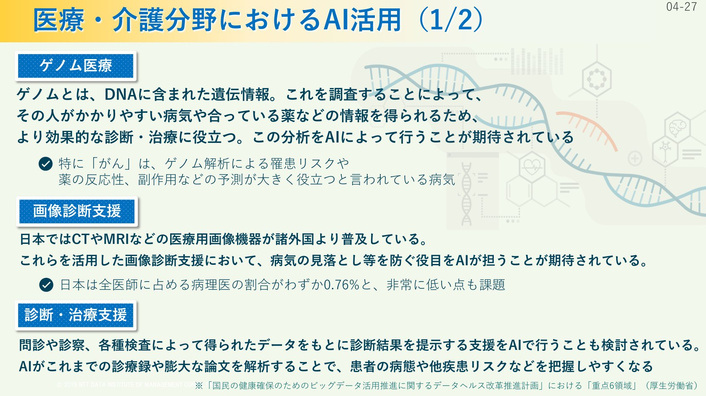
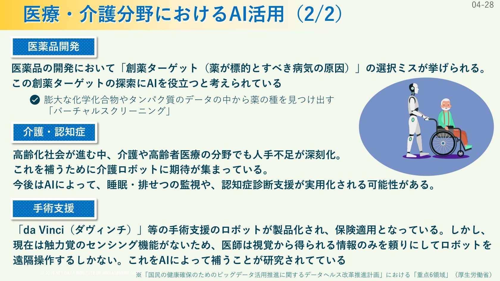
創造的な活動とAI
The Next Rembrandtは、レンブラントの作品の特徴を分析し、新しい肖像画を作るプロジェクトです。
绘画：将346幅伦勃朗作品数字化，分析笔触、色彩、布局与脸部比例，再生成新肖像。
絵の凹凸のデータも使い、3Dプリンタで出力しました。
原作颜料堆叠的立体信息也被使用，最终以3D打印输出；讲义记载图像生成约耗时500小时。
ORPHEUSは、入力した歌詞から自動で曲を作り、合成音声で出力するシステムです。
作曲：东京大学自2006年开展 ORPHEUS 研究，依据歌词语调、和弦、节奏及伴奏模式生成歌曲。
GhostWriterは、与えられたプロットや構造をもとに、小説の文章を生成します。
小说：“きまぐれ人工知能プロジェクト 作家ですのよ”开发 GhostWriter；人先提供情节和结构，程序可生成多个版本。
同じあらすじから10万通り以上の小説を作れると紹介されています。
讲义指出，同一梗概可生成10万种以上的文本，但数量多不代表质量高。
作品を作るだけでなく、その作品をどう評価するかも大きな課題です。
评价是关键难题：研究团队分析星新一作品的情节和结尾，建立评分函数。
さらに、「人狼ゲーム」のログから、プロット自体を自動生成することにも挑戦しました。
进一步尝试：让电脑玩狼人游戏，再根据对局日志自动生成故事情节。
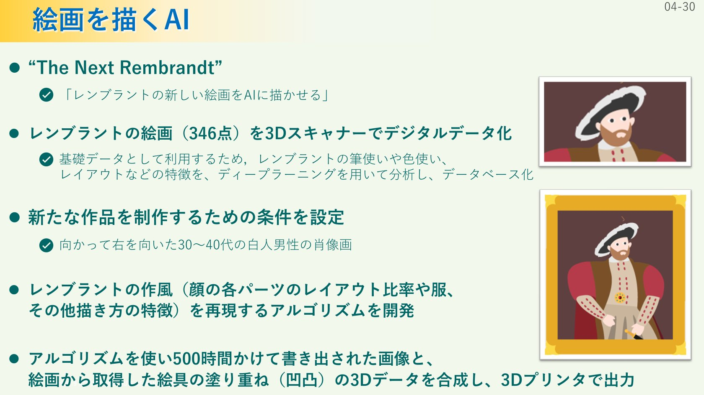
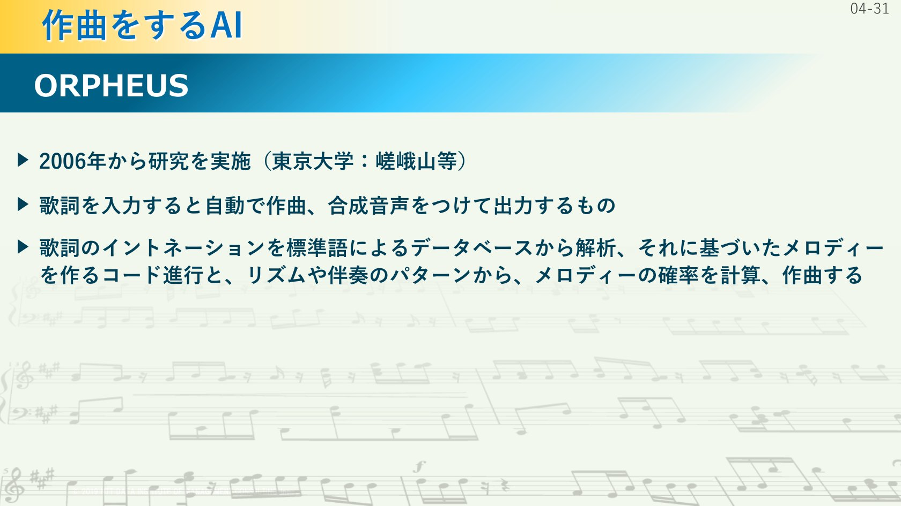
展开本节原讲义（2页）
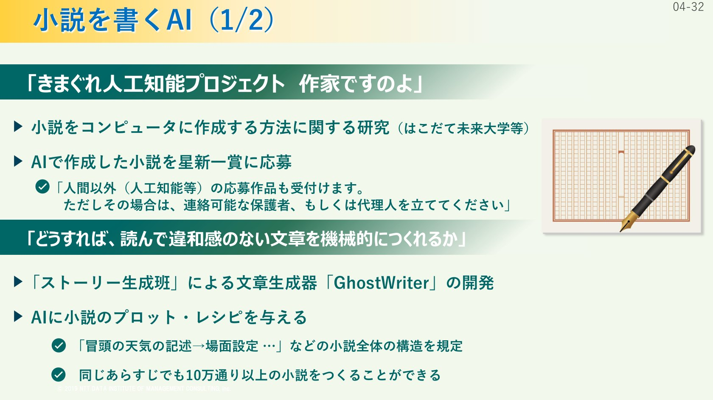
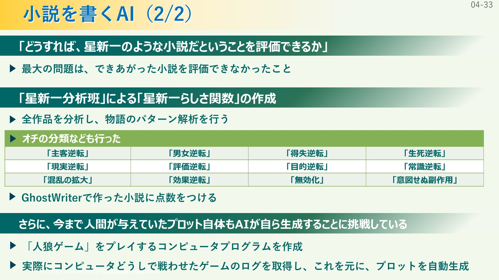
入試に挑戦するAI：東ロボくん
「東ロボくん」は、「ロボットは東大に入れるか」という研究プロジェクトのAIです。
东大机器人：国立信息学研究所等开展的“机器人能考入东京大学吗”项目，2011年开始。
歴史の知識問題や、数式に直せる数学の問題が得意でした。
强项：历史知识检索，以及可以形式化为数学表达式的问题。讲义记载总体偏差值由2014年的47.3升至2015年的57.8。
英語や国語では、文章の意味や常識を理解することが難しいとされました。
弱项：需要语义理解、常识和语境判断的英语及日语问题。即使语法正确，也可能不符合语境。
大量のデータを学習するだけでは、読解力の問題を解決できませんでした。
讲义观点：增加训练数据，并不足以解决该系统的阅读理解问题；资料记载2016年放弃原有的东大合格目标。
記憶や計算の能力と、意味を理解する能力は区別して考える必要があります。
复习重点：记忆、计算、生成看似合理的回答，与理解意义并非同一个评价维度。这是历史系统案例，不宜直接推广到所有当代 AI。
展开本节原讲义（2页）
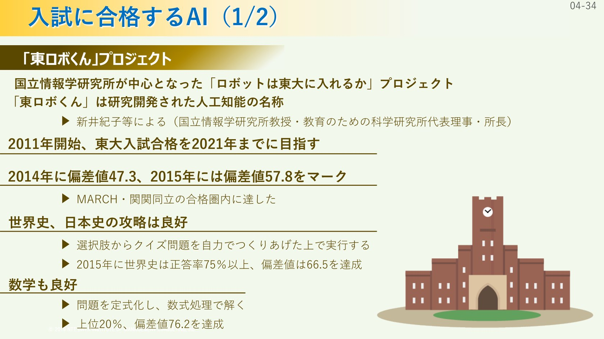
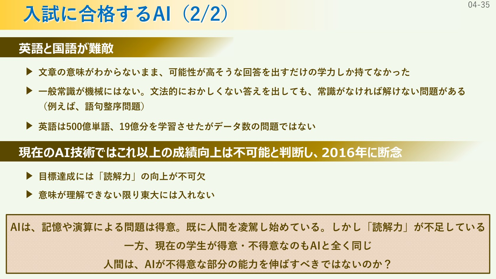
復習のポイント
AIは、人間が知能を使ってする仕事を、機械に行わせる技術です。
① 定义：让机器执行需要智能的任务。
3回のブームは、「探索」「知識」「学習」の順番で覚えます。
② 历史：搜索 → 知识 → 学习。
AIは、製造、小売、物流、医療・介護などで活用されています。
③ 应用：制造、零售、物流、医疗与照护。
AIは創作にも使われますが、生成と評価、理解は分けて考えます。
④ 能生成作品，不等于能准确评价作品或具有人类式理解。
| 关键词 | 中文记忆 |
|---|---|
| 推論 | 依据条件或知识推导结论 |
| 探索 | 检查可能路径，寻找答案 |
| 知識獲得 | 获取并整理知识 |
| 機械学習 | 从数据训练、学习模式 |
| 深層学習 | 使用深层神经网络学习特征 |
| 特徴量 | 用于表示对象特征的数值等信息 |
| 需要予測 | 预测需要多少商品或服务 |
| 異常検知 | 发现偏离正常情况的状态 |
| 可視化 | 将数据变成便于理解的图表 |
| 読解力 | 理解文章意义的能力 |
展开本节原讲义（1页）
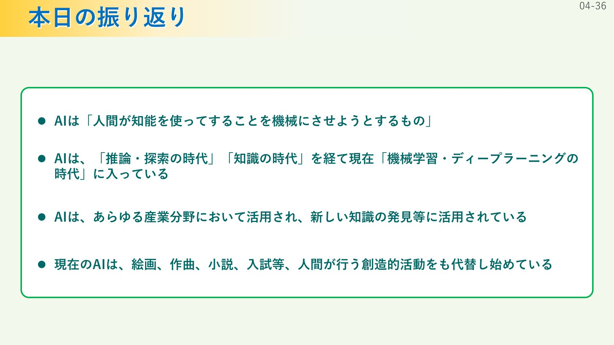
自测 · 复习后检查
- 三次 AI 热潮的关键词与局限分别是什么？
- AI、机器学习、深度学习之间是什么关系？
- 为什么专家系统会遇到“知识获取瓶颈”？
- 制造、零售、物流各举一个“使用的数据 → AI 的任务 → 作用”例子。
- ELIZA 的自然回答，为什么不一定代表理解？
- 根据东大机器人案例，计算能力与阅读理解有什么区别？
知識のまとめ｜知识点概括
复习重点是 AI 的发展路径、关键方法及各行业的“使用什么数据 → 解决什么问题”。
01 AI 的基本含义
AIは人工知能のことで、人間の知能を必要とする仕事を機械に行わせます。
02 三次 AI 热潮
推論・探索 → 知識・ルール → 機械学習・深層学習。
03 专家系统的困难
知識獲得のボトルネックは、専門家の知識を集め、記述することが難しい問題です。
04 AI、ML、DL 的关系
深層学習は機械学習の一部であり、機械学習はAIの一分野です。
05 AI 的产业应用
製造・小売・物流・医療などで活用されます。
06 生成不等于理解
作品の生成と内容の理解は同じではありません。
| 应用领域 | 输入的数据 | AI 的任务 → 目标 |
|---|---|---|
| 制造 | 零件图像、设备运行记录 | 缺陷检测、预测设备异常 → 减少损失 |
| 零售 | 历史销量、天气、顾客行为 | 需求预测、陈列建议 → 减少缺货与浪费 |
| 物流 | 货物标签、摄像头与车辆传感器 | 识别、分拣、检测驾驶风险 → 提升效率与安全 |
| 医疗与护理 | 医学影像、病历、健康记录 | 诊断辅助、风险分析 → 支持医护决策 |
离开前确认三件事
- 专家系统和机器学习最大的知识来源区别是什么？
- 深度学习和机器学习是什么包含关系？
- 举一个 AI 应用，说明“输入 → 模型任务 → 预期效果”，同时指出一项局限。